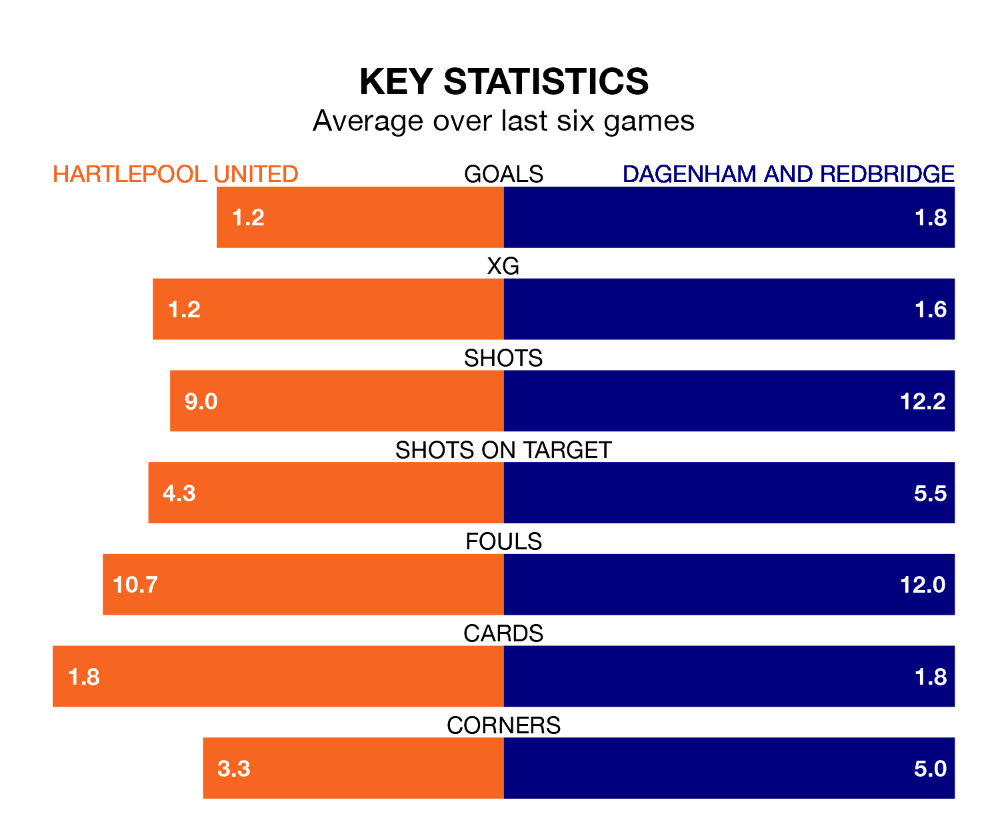

Hartlepool United host Dagenham and Redbridge on Saturday at the Suit Direct Stadium in the National League.
In their last league match, on Tuesday, Hartlepool lost to Maidenhead United 3-1 away, with their goal scored by Callum Cooke.
Dagenham & Redbridge also lost, 3-2 away at Woking on April 6, with Connor Lawless and Ryan Hill on the scoresheet.
In the last 10 years, Hartlepool and Dagenham & Redbridge have played each other on 11 occasions. Hartlepool won eight of them and Dagenham & Redbridge three.
On average, Pools scored 1.5 goals and Dagenham & Redbridge 1.1 in those matches.
Their last meeting was on September 23, when Hartlepool won 1-0 away.
With 65 goals in 44 games so far this season, Hartlepool are scoring at the league's average rate with 1.5 goals per game. And they are conceding more than average, letting in 78 goals at a rate of 1.8 per game.
Dagenham & Redbridge are also average scorers, with 1.5 goals per game. They have conceded 1.3 goals per game.
The visitors are 15th in the table after 44 games, of which they have won 14 and drawn 12, earning 54 points.
United are three places ahead of Dagenham & Redbridge in 12th, with 16 wins and eight draws putting them on 56 points.
Pools are in mixed form in the National League, with two wins and two draws from their last six games.
And also with two wins and two draws over that period, Dagenham & Redbridge's form is identical – they have both taken eight points from 18.
Updated: 10:01 (UTC), 12/04/24